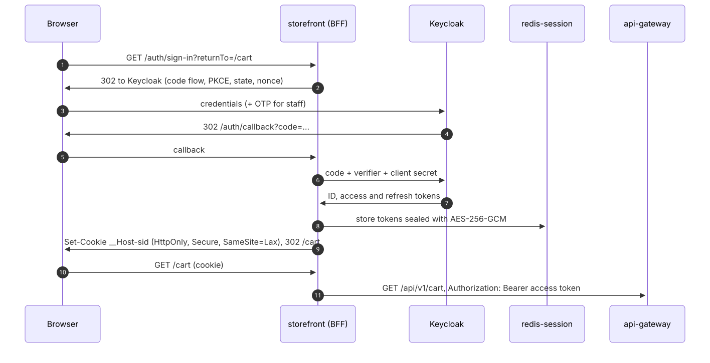

12. Security design#
How the platform protects customers, money and data: the trust boundaries, the threats at each (STRIDE), sign-in and authorisation, secrets, data protection, and the supply chain. The storefront's own controls are detailed in 16 Storefront UI §16.5–16.6; requirements are in SPEC §8.1. Section 12.8 lists what is designed but not yet built.
12.1 Trust boundaries#

| Boundary | What crosses it | Trust decision |
|---|---|---|
| B1 Internet → edge | everything | TLS 1.2+, HSTS preload; web application firewall (OWASP Core Rule Set); per-address rate limits; only the edge has a LoadBalancer |
| B2 Edge → storefront / Keycloak | page requests, sign-in | storefront trusts nothing from the browser but its sealed session cookie |
| B3 → api-gateway | API calls with a bearer token | signature, expiry, issuer and audience checked; roles for staff routes; /internal/** denied |
| B4 Gateway → services | routed calls with the token | each service validates the JWT again and checks ownership (order.customerId == sub) |
B5 Service → service (/internal) |
checkout saga calls, price lookups | the caller's client-credentials token: audience must name the callee and azp must be an allowed caller (ADR 0014); network policy as a second check |
| B6 Services → platform stores | queries, events | one database and user per service; network policy per namespace |
| B7 Platform → payment provider | authorise, capture, void, refund | egress gateway with an FQDN allow-list; card data never enters the platform (PCI DSS SAQ A) |
12.2 Threats per boundary (STRIDE)#
| # | Threat | Where | Control |
|---|---|---|---|
| S | Spoofing a user | B1–B3 | OIDC with Keycloak; JWTs (5 min) validated at the gateway and again in each service; staff need a second factor; brute-force lockout |
| S | Spoofing a service | B5 | a token for the callee from the caller's own realm client (InternalCallers); network policies admit only the named caller |
| T | Tampering with prices or totals | B3–B5 | the client sends SKUs and quantities only; cart-service prices from catalog; order-service totals from the cart snapshot, not the request |
| T | Tampering with events | Kafka | only the owning service writes its topic (outbox); consumers validate the envelope and park unreadable events in <topic>.dlq |
| R | Repudiation of orders or refunds | order, payment | the order, its saga step and cancel reason are persisted with timestamps; the customer id comes from the token; request id and trace id on every request |
| I | Token theft through XSS | storefront | no tokens in the browser; strict CSP with nonces and enforced Trusted Types; React escaping |
| T | Injection (SQL, script, path traversal) in requests | B1 | parameterised queries and validation in every service; before that, the edge's firewall refuses requests that look like attacks (anomaly score ≥ 5) and logs them |
| I | Data leaks in logs and URLs | all | no personal data in URLs; emails masked in logs; problem responses carry codes, never stack traces |
| I | Reading another customer's order | B4 | ownership check in the application layer; a foreign order is 404, not 403, so ids cannot be probed |
| D | Floods, scraping, credential stuffing | B1, B3 | known scanners refused by the firewall; edge limits per address; gateway token buckets per user and per address; sign-in limits; admission control per hot SKU |
| D | One slow dependency stalls checkout | B5 | timeouts, retries and a circuit breaker per downstream (Resilience4j ResilientCall) |
| E | Customer calls staff endpoints | B3–B4 | hasRole("staff") at the gateway and in catalog; staff role only from Keycloak |
| E | Reaching /internal from outside |
B3 | gateway denyAll on /internal/**; the edge routes only /api, pages and /auth |
| E | Compromised pod moves sideways | B5–B6 | non-root, read-only root filesystem, all capabilities dropped, RuntimeDefault seccomp; default-deny network policies; per-service database users |
12.3 Authentication and sessions#

- The storefront is a confidential client; the browser never holds a token. A guest cart uses a random
__Host-guestcookie, merged into the account at sign-in. - Access tokens live 5 minutes (15 in the local compose realm, so load tests outlast them); the BFF refreshes them 60 s before expiry; refresh tokens rotate. Service tokens (client credentials) live 15 minutes and are renewed after 10. Sessions end after 30 minutes idle or 12 hours. Sign-out ends the Keycloak session too.
- The API (
shop-web, public client with the password grant) is enabled only in dev, for tests and API exploration.
12.4 Authorisation#
| Rule | Enforced in |
|---|---|
| Public: browse, search, product, reviews (read), recommendations | gateway and services permitAll |
Signed in (customer): cart merge, checkout, orders, cancel, write a review |
gateway authenticated; services check the token |
| Own data only: orders, cancellation, reviews of bought products | application layer (isOwnedBy, review eligibility from order.events) |
| Staff: products, categories, images, stock | gateway and catalog hasRole("staff"); staff can act on any order |
| Internal: saga calls, prices | not routed by the gateway; the callee checks the caller's service token (audience = callee, azp = allowed caller); network policy per callee |
Stock (/internal/stock, reached through the gateway's staff route) |
inventory hasRole("staff") on the forwarded staff token |
Roles come only from Keycloak's realm roles in the token. Nothing in the request body or headers can grant one.
12.5 Secrets#
| Secret | Held in | Reaches the pod as |
|---|---|---|
| Database, RabbitMQ and Redis passwords | the environment's vault | External Secrets → Kubernetes Secret → env (staging, prod); dev-secrets in Git for dev only |
| Storefront client secret and session key | vault | External Secret; the session key has a key id so it can rotate |
| order-service and cart-service realm client secrets | vault | External Secrets in both namespaces: Keycloak's realm import and the service read the same key |
| Payment provider key | vault | External Secret, payment-service only |
| TLS certificates | cert-manager | Secret mounted by the edge |
Nothing secret is in the repository except the dev overlay's fixed passwords, which only work on a local cluster. Images contain no secrets; configuration comes from ConfigMaps and Secrets at run time.
12.6 Data protection#
| Data | Where | Protection |
|---|---|---|
| Card numbers | never in the platform | tokenised in the browser by the provider; the platform sees a token and the last four digits |
| Customer identity (name, email) | Keycloak; the email is stored with the order (orders.customer_email) and carried in order.events for receipts |
TLS outside the cluster; the storefront masks it in logs; every data store's volumes are encrypted (below) |
| Orders and payments | PostgreSQL orders, payments |
per-service database user; three replicas across zones in prod; continuous WAL archive and nightly backups, restorable to any moment of the last 30 days |
| Sessions and tokens | redis-session |
AES-256-GCM sealed; no persistence beyond the session lifetime |
| Traces and logs | Tempo, Loki | request ids, not personal data; query strings dropped from span names and URLs; retention 24–72 h locally, set per environment |
- Encryption at rest: in staging and production every data store's volumes (PostgreSQL, Kafka, the durable Redis
instances, OpenSearch, Cassandra, RabbitMQ, ClickHouse) use the StorageClass
encrypted-ssd, which the cluster provides with a customer-managed key (components/encrypted-storage). A store cannot come up on unencrypted disks by mistake: without that class its volumes stay pending. - Backups: each PostgreSQL cluster (orders, inventory, payments, catalog, Keycloak) archives its write-ahead log
continuously and takes a base backup every night to the
e-commerce-backupsbucket, compressed and encrypted (AES-256), kept 30 days (base/platform/backups.yaml); restoring is runbook 15.5. The other stores are rebuilt rather than restored: search from catalog's events, analytics from Kafka, carts and caches are disposable; Kafka itself is replicated three times across zones, and reviews have Cassandra replication factor 3.
Retention and deletion follow 04 Database design (retention section).
12.7 Supply chain and builds#
- Pinned versions everywhere: Gradle version catalogs (
gradle/libs.versions.toml) in every Java service,package-lock.jsonwith integrity hashes, Go modules,pyproject.toml; image tags pinned in compose and Kubernetes. - CI per service: tests, then one shared image job (
e-commerce-image.yml) for every image (the 11 services, the edge, the storefront, analytics, dlq-replay). It writes a CycloneDX SBOM of the image (Syft: the application's libraries, the runtime and the OS packages) and fails on fixable critical vulnerabilities in it (Trivy). The storefront also runsnpm audit, keeps its npm SBOM and a bundle budget. - On
mainthe image job pushes the image, signs it with Sigstore keyless signing (the certificate names the workflow and commit, recorded in the public transparency log), attaches the SBOM as a signed attestation and adds GitHub's SLSA build provenance. - Admission: in staging and production a Kyverno policy (
components/signed-images) admits a pod in the shop namespace only if each e-commerce image is signed by that workflow onmainand has the signed SBOM; it replaces the tag with the verified digest, so a re-pushed tag cannot change what runs. - Dependency updates: Renovate (
renovate.json) opens weekly pull requests per project for Gradle, npm, Go, Python, Dockerfiles, compose, Kubernetes manifests and GitHub Actions (pinned to digests). Releases must be 14 days old; security fixes come at once. Database majors and operator versions wait for approval on the dashboard, because they need a migration or a CRD update. Nothing merges without the project's CI passing and a review. - Base images: distroless or slim, non-root. Nightly ZAP baseline scan against the storefront through the edge.
12.8 Gaps (designed, not yet built)#
| Gap | Risk today | Plan |
|---|---|---|
| Encryption between pods | internal calls carry service tokens (ADR 0014) but travel as plain HTTP; someone able to read pod traffic could replay a token within its 15 minutes | a mesh with mTLS, or the CNI's transparent encryption (WireGuard) |
| Bot management | the firewall refuses known scanners and attack patterns, and rate limits slow the rest; a careful bot that behaves like a browser is only rate-limited | bot scoring and challenges at a CDN in front of the edge |